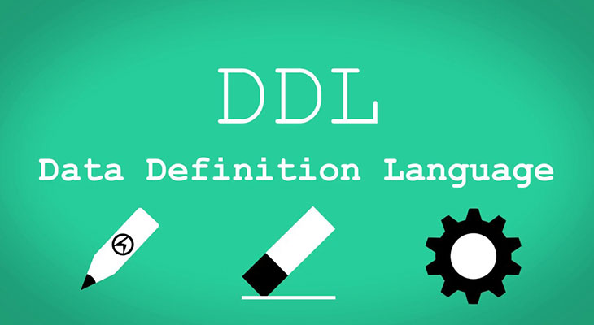

Types of Database Language
| Type |
Description |
Images |
| Data Definition Language |
- DDL stands for Data Definition Language. It is used to define database structure or pattern.
- It is used to create schema, tables, indexes, constraints, etc. in the database.
- Using the DDL statements, you can create the skeleton of the database.
- Data definition language is used to store the information of metadata like the number of tables and schemas, their names, indexes, columns in each table, constraints, etc.
Here are some tasks that come under DDL:
- Create: It is used to create objects in the database.
- Alter: It is used to alter the structure of the database.
- Drop: It is used to delete objects from the database.
- Truncate: It is used to remove all records from a table.
- Rename: It is used to rename an object.
- Comment: It is used to comment on the data dictionary.
These commands are used to update the database schema that's why they come under Data definition language.
|
 |
| Data Manipulation Language |
DML stands for Data Manipulation Language. It is used for accessing and manipulating data in a database. It handles user requests.
Here are some tasks that come under DML:
- Select: It is used to retrieve data from a database.
- Insert: It is used to insert data into a table.
- Update: It is used to update existing data within a table.
- Delete: It is used to delete all records from a table.
- Merge: It performs UPSERT operation, i.e., insert or update operations.
- Call: It is used to call a structured query language or a Java subprogram.
- Explain Plan: It has the parameter of explaining data.
- Lock Table: It controls concurrency.
|
|
| Data Control Languages |
- DCL stands for Data Control Language. It is used to retrieve the stored or saved data.
- The DCL execution is transactional. It also has rollback parameters.
(But in Oracle database, the execution of data control language does not have the feature of rolling back.)
Here are some tasks that come under DCL:
- Grant: It is used to give user access privileges to a database.
- Revoke: It is used to take back permissions from the user.
There are the following operations which have the authorization of Revoke:
CONNECT, INSERT, USAGE, EXECUTE, DELETE, UPDATE and SELECT.
|
|
| Transaction Control Language |
TCL is used to run the changes made by the DML statement. TCL can be grouped into a logical transaction.
Here are some tasks that come under TCL:
- Commit: It is used to save the transaction on the database.
- Rollback: It is used to restore the database to original since the last Commit.
|
|